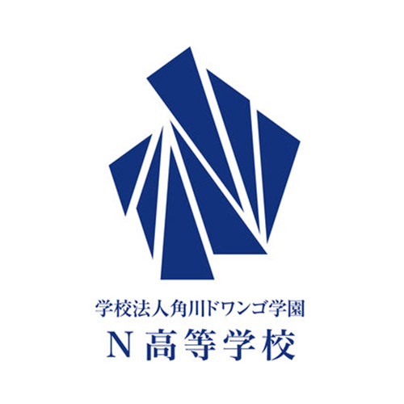

WORKS
N高 インターン プログラミングTA

N高等学校で2020年5月からインターンをしています。
主にプログラミングコースの生徒を中心に毎日の制作のアドバイス、フィードバックを行っています。
本科コースのプログラミングの授業(G Suite, AdobeCCなど)も担当しながら、G Suite上の業務ファイルの関数の構築などもしています。
Skill
- G Suite
- Adobe CC
- 生徒が使っている言語、ライブラリ
業務で使用 GASも書いています。
簡単なロゴデザイン,画像編集,動画編集ができます。
生徒の開発は3DCGからWeb、組み込みまで様々なので、日々学習しながら対応しています。
分かる場合はどう対処するかの誘導、分からない場合には一緒に調べよう、という形で生徒の課題解決能力を育んでいます。
Unity, blender, Python, Swift, Vue.js, flutter, etc.